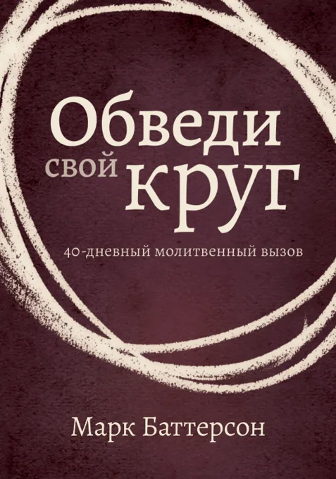

Книги
Книги о молитве на русском языке. Скачать их можно бесплатно.
Материалы бесплатны. Для скачивания нужно войти на сайт или зарегистрироваться. Вход · Регистрация

Круги молитвы
Чувствуете ли вы, что в молитве есть нечто большее, чем вы сейчас переживаете? Книга Марка Баттерсона включает размышления автора о том, как Бог отвечает на молитвы, а также истории, которые служат убедительным доказательством того, что Бог способен сделать неизмеримо больше того, о чем мы просим или помышляем.
Скачать
Обведи свой круг
40-дневный молитвенный вызов Марка Баттерсона. Сорок дней молитвы, которые могут изменить всю оставшуюся жизнь: если ты взыщешь Бога как никогда раньше, Бог проявит Себя как никогда раньше.
Скачать
Хождение в Духе
Автор книги делится библейским пониманием и личным опытом хождения в Духе Святом. Стив Смит раскрывает читателям смысл новозаветних заповедей о наполнении Духом и подчинении Ему, побуждая к преданному следованию за Господом Христом.
Скачать